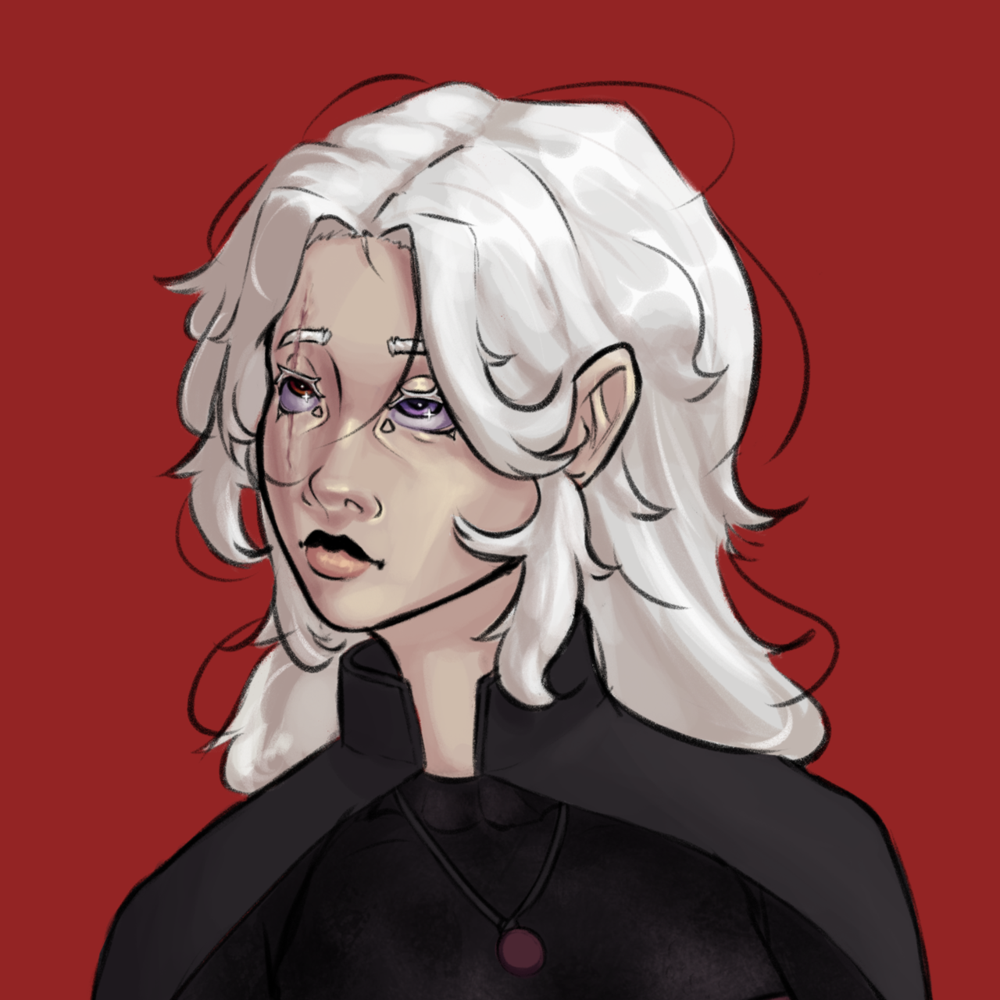

<!DOCTYPE html>
<html lang="pt">
<head>
    <meta charset="UTF-8">
    <meta name="viewport" content="width=device-width, initial-scale=1.0">
    <title>Project Shadow Terminal</title>
    
    <!-- Tailwind CSS -->
    <script src="https://cdn.tailwindcss.com"></script>
    
    <!-- Font Awesome (para ícones) -->
    <link rel="stylesheet" href="https://cdnjs.cloudflare.com/ajax/libs/font-awesome/6.5.1/css/all.min.css">
    
    <!-- Tone.js (para áudio) -->
    <script src="https://cdnjs.cloudflare.com/ajax/libs/tone/14.7.77/Tone.js"></script>
    
    <link rel="stylesheet" href="styles.css">
</head>
<body class="bg-black text-gray-300">

    <canvas id="particle-canvas"></canvas>

    <!-- Ecrã de Boot -->
    <div id="boot-screen" class="w-screen h-screen flex items-center justify-center bg-black text-red-500 font-mono absolute top-0 left-0 z-20">
        <p id="boot-text" class="text-2xl"></p>
    </div>
    
    <!-- Conteúdo Principal (escondido inicialmente) -->
    <div id="main-container" class="w-screen min-h-screen flex-col md:flex-row font-mono hidden relative z-10">
        
        <!-- Barra Lateral -->
        <aside class="w-full md:w-1/4 md:max-w-xs h-auto md:h-screen ui-background border-b-2 md:border-b-0 md:border-r-2 border-red-900 p-4 flex flex-col flex-shrink-0">
            <div class="flex-grow flex flex-col">
                <h1 class="text-3xl text-red-500 font-bold mb-4 text-glow">P//SHADOW</h1>
                
                <div class="mb-4 text-center">
                    
                </div>

                <nav id="main-menu" class="flex flex-col gap-2">
                    <!-- Botões do Menu serão inseridos aqui -->
                </nav>
                <div id="system-status-container" class="flex-grow flex flex-col justify-end">
                    <!-- Painel de Status será inserido aqui -->
                </div>
            </div>
            
            <div class="flex flex-col gap-2 border-t border-gray-800 pt-2 mt-4 flex-shrink-0">
                <div class="flex items-center justify-between text-gray-500">
                    <div id="lang-buttons" class="flex gap-1">
                        <!-- Botões de Idioma serão inseridos aqui -->
                    </div>
                    <button id="mute-button" class="text-gray-500 hover:text-white p-2">
                        <i class="fas fa-volume-xmark fa-lg"></i>
                    </button>
                </div>
                 <p class="text-xs text-center text-gray-700">G.U.N. TERMINAL V5.0.0</p>
            </div>
        </aside>
        
        <!-- Janela de Conteúdo -->
        <main class="flex-1 w-full h-auto md:h-screen p-4 sm:p-8 overflow-y-auto relative">
            <div id="content-window" class="relative z-10 w-full h-full">
                <!-- Conteúdo da seção será inserido aqui -->
            </div>
        </main>
    </div>

    <!-- Scripts -->
    <script src="data.js"></script>
    <script src="audio.js"></script>
    <script src="renderers.js"></script>
    <script src="particles.js"></script>
    <script src="app.js"></script>
</body>
</html>
